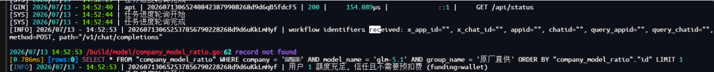
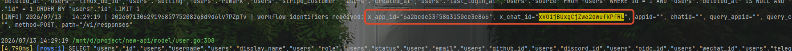
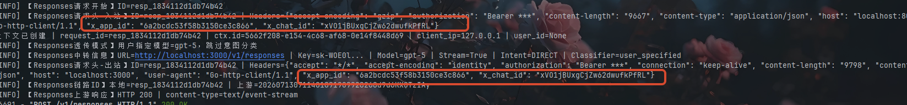
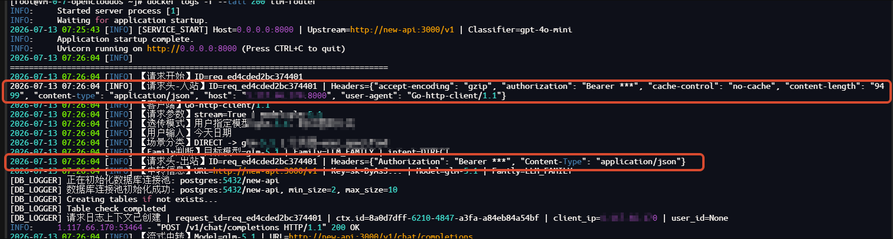
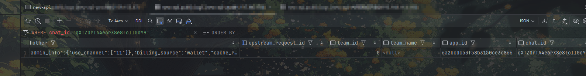

FastGPT -> AI Proxy -> llm-router -> new-api 工作流标识透传说明
AppID 与 ChatID 从 FastGPT 经 AI Proxy、llm-router 到 new-api 的实现与排障记录
文档日期：2026-07-14
适用字段：FastGPT 工作流appId、对话chatId
标准请求头：X-App-Id、X-Chat-Id
1. 文档目的
本文记录 appId 和 chatId 如何从 FastGPT 发出，经过 AI Proxy 和 llm-router，最终由 new-api 接收并写入日志数据库。除最终实现外，本文也记录本次联调中出现过的问题、定位方法、部署注意事项和后续排障步骤。
目录
- 文档目的
- 最终结论
- 主链路总览
- 请求头协议
- FastGPT 端实现
- AI Proxy 端实现
- llm-router 端实现
- new-api 端实现
/v1/chat/completions与/v1/responses- 本次联调中出现的问题
- Docker 网络与配置检查
- 推荐的逐跳排障流程
- 分段 Curl 验证
- 发布检查清单
- 安全和可观测性注意事项
- 后续建议
- 验收标准
涉及四个仓库：
| 系统 | 本地路径 | 职责 | |
|---|---|---|---|
| FastGPT | /mnt/d/project/ai-gpt-latest |
从工作流上下文取得 appId/chatId，随模型请求发出 |
|
| AI Proxy | /mnt/d/project/aiproxy |
接收 FastGPT 请求，选择渠道并重建上游请求，显式透传两个业务头 | |
| llm-router | /mnt/d/project/llm-router |
进行模型路由，将两个业务头继续转发给 new-api | |
| new-api | /mnt/d/project/new-api |
接收业务头，将值写入消费日志或错误日志的 app_id/chat_id 字段 |
|
2. 最终结论
四端当前约定如下：
- 新请求统一使用
X-App-Id和X-Chat-Id。 - HTTP 请求头名称大小写不敏感，因此
X-APP-ID、X-App-Id和x-app-id在 HTTP 语义上是同一个头。 - 连字符和下划线不是同一个字符。
X-App-Id与X_APP_Id是两个不同的请求头。 - FastGPT 当前发送连字符格式
X-APP-ID、X-CHAT-ID。 - AI Proxy 入站同时兼容连字符格式和旧下划线格式，出站统一写成
X-App-Id、X-Chat-Id。 - llm-router 的
/v1/chat/completions仅通过白名单透传这两个业务头；不会无条件复制全部请求头。 - new-api 兼容多种历史命名，但推荐并优先读取连字符格式。
- new-api 将标识写入
logs.app_id和logs.chat_id。如果配置了LOG_SQL_DSN，必须去日志库查询，而不是只查主库。
3. 主链路总览
FastGPT 当前模型调用代码使用 OpenAI SDK 的 chat.completions.create()，因此默认业务链路是 /v1/chat/completions：
拖动画布查看 · Ctrl/⌘ + 滚轮缩放 · 按 0 重置
各跳的核心契约：
| 跳转 | 路径 | 入站格式 | 出站格式 | 处理方式 |
|---|---|---|---|---|
| FastGPT -> AI Proxy | /v1/chat/completions |
无上游入站，值来自工作流上下文 | X-APP-ID、X-CHAT-ID |
OpenAI SDK 自定义 headers |
| AI Proxy -> llm-router | /v1/chat/completions |
连字符优先，兼容旧下划线 | X-App-Id、X-Chat-Id |
显式白名单复制 |
| llm-router -> new-api | /v1/chat/completions |
大小写不敏感读取连字符头 | X-App-Id、X-Chat-Id |
显式白名单复制 |
| new-api -> LOG_DB | 内部调用 | 兼容多种连字符和下划线别名 | 数据库字段 | 写入消费日志和错误日志 |
4. 请求头协议
4.1 标准名称
X-App-Id: fastgpt-app-example
X-Chat-Id: fastgpt-chat-example
字段含义：
| 请求头 | 含义 | 来源 | 最终字段 |
|---|---|---|---|
X-App-Id |
FastGPT 当前运行的应用或工作流 ID | runningAppInfo.id |
logs.app_id |
X-Chat-Id |
FastGPT 当前会话 ID | 工作流调度参数 chatId |
logs.chat_id |
这两个字段是业务追踪信息，不参与模型鉴权。鉴权仍由 Authorization: Bearer ... 独立完成。
4.2 为什么不用下划线
最初实现使用了 X_APP_Id 和 X_Chat_Id。本地服务直连时可以工作，但经过 Nginx 等代理时可能丢失，因为 Nginx 默认不接受带下划线的请求头。典型表现是：
- FastGPT 日志显示已经发送；
- 本地直连链路能够入库；
- 生产经过网关后，后端服务看不到这两个头；
- 请求本身仍能成功，只有
app_id/chat_id为空。

最终统一改成连字符格式，避免依赖网关的 underscores_in_headers on 配置。保留旧格式兼容仅用于平滑升级，不应继续作为新客户端的发送格式。
4.3 值的约束
- 空值不发送，也不覆盖后续已有值。
- FastGPT 发送前使用
String(...)转成字符串。 - new-api 数据库字段类型为
varchar(128)，正常 ID 应控制在 128 字符以内。 - new-api 的诊断日志会将标识截断到 128 个 Unicode 字符，避免异常请求造成超长日志。
- 不应把用户密钥、Authorization 或其他凭证放进这两个字段。
5. FastGPT 端实现
5.1 工作流上下文保存标识
文件：packages/service/core/workflow/utils/context.ts
FastGPT 使用 Node.js AsyncLocalStorage 保存一次工作流执行的上下文：
type ContextType = { queryUrlTypeMap: Record<string, ChatFileTypeEnum>;
mcpClientMemory: Record<string, MCPClient>;
appId?: string;
chatId?: string;
};
文件：packages/service/core/workflow/dispatch/index.ts
工作流开始执行时，把当前应用和会话写入上下文：
runWithContext(
{ queryUrlTypeMap: {}, mcpClientMemory: {}, appId: String(runningAppInfo.id), chatId }, () => runWorkflow(...));
使用 AsyncLocalStorage 的原因是 LLM 请求函数位于较深的调用层，不需要给所有中间函数增加 appId/chatId 参数，同时不同并发工作流仍持有各自独立的上下文。
5.2 构造 LLM 请求头
文件：packages/service/core/ai/llm/request.ts
在调用 OpenAI SDK 前，通过 getWorkflowContextSafe() 安全读取上下文：
const workflowContext = getWorkflowContextSafe();
const workflowHeaders: Record<string, string> = {};
if (workflowContext?.appId) {
workflowHeaders['X-APP-ID'] = String(workflowContext.appId);}
if (workflowContext?.chatId) {
workflowHeaders['X-CHAT-ID'] = String(workflowContext.chatId);}
然后合并请求头并交给 SDK：
const requestHeaders: NonNullable<OpenAI.RequestOptions['headers']> = {
...workflowHeaders, ...options?.headers, ...(modelData.requestAuth ? { Authorization: `Bearer ${modelData.requestAuth}` } : {})};
await ai.chat.completions.create(body, {
...options, ...(modelData.requestUrl ? { path: modelData.requestUrl } : {}), headers: requestHeaders});
合并顺序需要注意：options.headers 位于 workflowHeaders 之后，因此调用方显式传入同名请求头时可以覆盖上下文值。requestAuth 最后合并，只影响 Authorization。
5.3 FastGPT 如何找到 AI Proxy
文件：packages/service/core/ai/config.ts
当配置了 AIPROXY_API_ENDPOINT 时，默认 OpenAI Base URL 为：
${AIPROXY_API_ENDPOINT}/v1
Docker Compose 中通常配置：
environment:
AIPROXY_API_ENDPOINT: http://aiproxy:3000 AIPROXY_API_TOKEN: <与 AI Proxy ADMIN_KEY 对应的令牌>
因此 SDK 最终请求：
http://aiproxy:3000/v1/chat/completions
需要特别注意 Base URL 的优先级：
userKey.baseUrl
> global.systemEnv.oneapiUrl > AIPROXY_API_ENDPOINT/v1 > OPENAI_BASE_URL > https://api.openai.com/v1
如果线上给用户或团队配置了自定义 baseUrl，请求可能绕过 AI Proxy。这是“代码相同，但本地能入库、生产不能入库”的重要检查项。
5.4 FastGPT 诊断日志
当前代码会打印：
[FastGPT][LLM HTTP request headers] {
model: 'gpt-5', headers: { 'X-APP-ID': '...', 'X-CHAT-ID': '...' }}
该日志只能证明 FastGPT 在调用 OpenAI SDK 时构造了这两个字段，不能单独证明字段已经穿过 Docker 网络、反向代理和后续服务。
5.5 FastGPT 相关提交
| 提交 | 说明 |
|---|---|
4606b274d |
增加工作流上下文中的 appId/chatId，并在 LLM 请求中发送旧下划线头 |
107fd7ec5 |
将请求头变量补成与 OpenAI SDK 一致的显式类型 |
436cc7c81 |
将发送格式从下划线改成代理兼容的连字符格式 |
6. AI Proxy 端实现
6.1 为什么必须显式透传
AI Proxy 不会直接复用 FastGPT 的原始 http.Request。它会完成以下工作：
- 解析请求体和模型信息；
- 选择渠道；
- 由 adaptor 转换请求体；
- 根据渠道 Base URL 创建一个新的上游
http.Request； - 由 adaptor 重新设置 Authorization、Content-Type 等请求头；
- 调用上游渠道。
因为第 4 步创建了新请求，自定义入站请求头不会自然出现在新请求中。不能把“请求体透传”和“请求头透传”视为同一件事，必须在新请求构造完成后显式复制业务头。
6.2 请求头映射和兼容策略
文件：core/relay/controller/dohelper.go
当前映射：
const (
workflowAppIDHeader = "X-App-Id" workflowChatIDHeader = "X-Chat-Id")
var workflowHeaderMappings = [...]struct {
outbound string inbound []string}{
{outbound: workflowAppIDHeader, inbound: []string{workflowAppIDHeader, "X_APP_Id"}}, {outbound: workflowChatIDHeader, inbound: []string{workflowChatIDHeader, "X_Chat_Id"}},}
处理规则：
- 入站优先读取标准连字符格式；
- 标准格式为空时，兼容旧下划线格式；
- 如果两种格式同时存在，标准格式优先；
- 出站始终使用
X-App-Id和X-Chat-Id； X-Not-Allowed等其他任意自定义头不会因为这段逻辑被放行。
复制发生在 adaptor 完成常规请求头设置之后：
maps.Copy(req.Header, convertedHeader)
adaptor.SetupRequestHeader(...)
copyWorkflowHeaders(c, req)
这样既不会把 FastGPT 的旧 Authorization 错误透传给模型供应商，也能避免 adaptor 重建请求头时覆盖业务标识。
6.3 AI Proxy 调试日志
当 DEBUG=true 时，AI Proxy 在真正调用上游前记录：
relay workflow headers
in_x_app_id="..."
in_x_chat_id="..."
out_x_app_id="..."
out_x_chat_id="..."
out_authorization_set="true"
out_content_type="application/json"
字段解释：
in_*：AI Proxy 从 FastGPT 入站请求中读到的值；out_*：AI Proxy 构造完上游请求后实际准备发送的值；out_authorization_set：只记录是否存在 Authorization，不打印密钥；out_content_length_header：用于排查请求体重建问题，与业务 ID 无直接关系。
Docker 中开启调试：
services:
aiproxy: environment: DEBUG: "true"
修改后需要重新创建容器：
docker compose up -d --force-recreate aiproxydocker compose logs -f --tail=100 aiproxy
6.4 AI Proxy 测试
文件：core/relay/controller/dohelper_test.go
测试覆盖：
- 标准连字符入站能够转发；
- 旧下划线入站仍然兼容；
- 两种格式同时存在时，标准格式优先；
- 非白名单头不会转发；
- Content-Type 等原有请求头行为不受影响。
验证命令：
cd /mnt/d/project/aiproxy/coremise exec go@1.26.5 -- go test ./relay/controller
6.5 AI Proxy 相关提交
| 提交 | 说明 |
|---|---|
4f16b3d |
首次增加旧下划线工作流请求头透传和 DEBUG 入站/出站日志 |
3445844 |
支持标准连字符头，保留旧格式兼容，并统一出站格式 |
7. llm-router 端实现
7.1 /v1/chat/completions 入站日志
文件：main.py
请求进入后立即生成 llm-router 自己的 request_id，并记录全部入站请求头：
【请求头-入站】ID=req_xxx | Headers={...}
日志使用 utils/header_logging.py 中的 sanitize_headers_for_log() 脱敏：
- Authorization 仅保留认证方案，例如
Bearer ***； - Cookie、API Key、token、secret 等敏感字段统一显示为
***； X-App-Id和X-Chat-Id保留原值，便于本次链路定位。
7.2 Chat Completions 白名单转发
llm-router 完成意图识别和目标模型选择后，重新构造上游请求头：
headers = {
"Authorization": f"Bearer {user_api_key}", "Content-Type": "application/json"}
for header_name in ("X-App-Id", "X-Chat-Id"):
header_value = request.headers.get(header_name) if header_value is not None: headers[header_name] = header_value
Starlette/FastAPI 对请求头的读取不区分大小写，所以 AI Proxy 发出的 X-App-Id 可以稳定读取。
出站地址：
${UPSTREAM_BASE_URL}/chat/completions
发送前记录：
【请求头-出站】ID=req_xxx | Headers={...}
入站与出站使用同一个 llm-router request_id，可以直接对比：
- 入站没有、出站没有：问题在 AI Proxy 之前或中间网关；
- 入站有、出站没有：问题在 llm-router 请求头构造；
- 入站有、出站也有：继续检查 new-api 入站和数据库写入。
7.3 /v1/responses 的差异
llm-router 同时实现了 /v1/responses。该路径不是 FastGPT 当前 chat.completions.create() 的默认调用路径，但可供其他客户端或显式配置使用。
Responses 路径会复制原始请求头，排除以下逐跳或必须重算的字段：
host
content-length
connection
随后设置：
content-type: application/json
accept-encoding: identity
最后通过 httpx.build_request() 构造实际请求，并记录：
【Responses请求头-入站】ID=resp_xxx | Headers={...}
【Responses请求头-出站】ID=resp_xxx | Headers={...}
因此 Responses 当前是“排除少数头后整体转发”，Chat Completions 则是“只转发两个业务头的白名单策略”。从安全和可维护性看，业务标识应继续依赖标准的两个连字符头，不应依赖 Responses 的全量复制行为。
7.4 llm-router 相关提交
| 提交 | 说明 |
|---|---|
154873e |
在 Chat Completions 和 Responses 增加入站/出站请求头日志，并为 Chat Completions 增加业务头白名单 |
418f409 |
抽取统一请求头脱敏函数，避免诊断日志泄露凭证 |
当前测试缺口：仓库中尚未发现针对请求头白名单和脱敏函数的自动化测试。后续应补充大小写、空值、敏感字段脱敏和 Responses 排除头测试。
8. new-api 端实现
8.1 入站中间件位置
文件：router/relay-router.go
new-api 在 /v1 Relay 路由中按以下顺序注册中间件：
RouteTag
-> SystemPerformanceCheck
-> TokenAuth
-> WorkflowIdentifierLog
-> ModelRequestRateLimit
-> Distribute
-> Relay
WorkflowIdentifierLog 位于 TokenAuth 之后，因此只有通过鉴权并继续执行的请求才会进入该诊断中间件。401 请求没有该日志是符合当前中间件顺序的。
8.2 接收兼容格式
文件：middleware/workflow_identifier_log.go、model/log.go
new-api 对 App ID 依次兼容：
X-App-Id
X-App-ID
X_APP_Id
X_APP_ID
X-AppId
X_AppId
对 Chat ID 依次兼容：
X-Chat-Id
X-Chat-ID
X_Chat_Id
X_CHAT_ID
X-ChatId
X_ChatId
Go 的 http.Header 本身大小写不敏感，因此部分大小写别名在行为上等价；保留这些名称主要用于兼容历史写法。连字符和下划线仍然不等价。
诊断中间件还会查看普通头 appid/app_id/appId、chatid/chat_id/chatId 以及同名 Query 参数，但当前数据库写入逻辑只调用 relayWorkflowAppId() 和 relayWorkflowChatId()，也就是只使用 X-* 系列请求头。普通头和 Query 参数只用于诊断，不会作为当前落库兜底。
8.3 入站和落库日志
请求通过 TokenAuth 后：
workflow identifiers received:
x_app_id="...",
x_chat_id="...",
appid="",
chatid="",
query_appid="",
query_chatid="",
method=POST,
path="/v1/chat/completions"
消费日志或错误日志准备写库前：
workflow identifiers database write:
log_type=consume,
app_id="...",
chat_id="..."
或：
workflow identifiers database write:
log_type=error,
app_id="...",
chat_id="..."
第一条证明 new-api 收到了请求头，第二条证明写入 GORM 模型前字段仍然存在。若第二条有值但数据库查询为空，应重点检查 LOG_DB、事务错误、数据库实例和镜像版本，而不是继续怀疑前面的代理。
8.4 数据库字段和写入时机
文件：model/log.go
AppId string `json:"app_id,omitempty" gorm:"type:varchar(128);index;default:''"`
ChatId string `json:"chat_id,omitempty" gorm:"type:varchar(128);index;default:''"`
写入位置：
RecordConsumeLog()：正常完成并记录消费日志时写入；RecordErrorLog()：请求失败并记录错误日志时写入。
如果 LogConsumeEnabled 为 false，RecordConsumeLog() 会直接返回，不会产生正常消费日志。这种情况下不能通过消费日志判断请求头是否传到 new-api，应查看入站诊断日志或错误日志。
8.5 主库和日志库
new-api 使用两个 GORM 变量：
DB 主业务数据库
LOG_DB 日志数据库
规则：
- 未设置
LOG_SQL_DSN：LOG_DB = DB，日志和业务数据在同一个库； - 设置了
LOG_SQL_DSN：日志写入独立日志库； logs.app_id/chat_id应在LOG_DB对应的logs表中查询。
这是生产环境最容易误判的点之一：本地通常只设置 SQL_DSN，所以查询主库能看到数据；生产可能设置了 LOG_SQL_DSN，此时查主库会误以为没有入库。
启动时主节点会通过 GORM AutoMigrate(&Log{}) 创建或更新字段。发布新镜像后应确认迁移完成，并检查：
SELECT column_name, data_type, character_maximum_length
FROM information_schema.columns
WHERE table_name = 'logs'
AND column_name IN ('app_id', 'chat_id');
查询数据示例：
SELECT
id, created_at, request_id, app_id, chat_id, model_name, typeFROM logs
WHERE app_id = '<测试 app id>' OR chat_id = '<测试 chat id>'ORDER BY id DESC
LIMIT 20;
8.6 new-api 测试和提交
文件：model/log_team_test.go
TestRecordConsumeLog_StoresRelayWorkflowHeaders 验证标准 App ID 头和旧下划线 Chat ID 头都能写入数据库。
| 提交 | 说明 |
|---|---|
5842f0a3 |
在日志表增加 app_id/chat_id，消费日志和错误日志读取并写入业务头，增加单元测试 |
4c30a259 |
增加鉴权后的入站诊断中间件和写库前日志 |
9. /v1/chat/completions 与 /v1/responses
9.1 当前 FastGPT 默认路径
当前 FastGPT 代码明确调用：
ai.chat.completions.create(...)
所以默认是：
FastGPT /v1/chat/completions
-> AI Proxy /v1/chat/completions
-> llm-router /v1/chat/completions
-> new-api /v1/chat/completions
如果 modelData.requestUrl 被显式配置，SDK 的请求 path 可能变化，因此排障时应同时检查模型配置。不能只根据代码中的默认方法推断线上实际 URL。
9.2 Responses 路径
AI Proxy、llm-router 和 new-api 都注册了 /v1/responses：
客户端 /v1/responses-> AI Proxy /v1/responses
-> llm-router /v1/responses
-> new-api /v1/responses
AI Proxy 的统一 prepareAndDoRequest() 路径同样执行 copyWorkflowHeaders()，所以两个业务头也适用于 Responses。llm-router 的 Responses 实现会保留这两个头，new-api 的 /v1 诊断中间件和 Relay 日志写入也适用于该路径。
但必须区分“链路支持 Responses”和“FastGPT 当前默认使用 Responses”。当前证据只证明前者，不证明 FastGPT 默认走 Responses。
10. 本次联调中出现的问题
10.1 误以为用户数据会自动透传
最初关注点是“FastGPT 传入的数据是否透传给 AI Proxy 上游”。请求体由 adaptor 转换，Headers 则在新请求中重建。即使请求体成功到达模型，自定义请求头也可能完全丢失。
解决方式：在 AI Proxy 的 adaptor 完成标准请求头设置后，增加严格白名单复制。
10.2 下划线请求头本地正常、生产丢失
初版 FastGPT 和 AI Proxy 使用 X_APP_Id/X_Chat_Id。本地服务直连时没有网关过滤，所以可以写入测试库；生产链路经过 Nginx 或其他代理后可能将带下划线的头判为无效。
解决方式：
- FastGPT 改发
X-APP-ID/X-CHAT-ID； - AI Proxy 出站统一为
X-App-Id/X-Chat-Id； - AI Proxy 和 new-api 保留旧格式兼容。
10.3 只有 GIN 访问日志，看不到业务头
AI Proxy 默认 GIN 日志只显示状态码、耗时、路径、模型和 token 统计，不会打印任意请求头。看到 /v1/chat/completions 返回 200 并不能证明两个标识已经转发。
解决方式：增加只在 DEBUG=true 时启用的 relay workflow headers 日志，并分别打印入站值和最终出站值。
10.4 本地能入库，生产不能入库
这个现象不能直接证明 llm-router 没问题，只能证明“本地所走的那条网络路径和配置”能够工作。生产仍可能存在：
- FastGPT 生产镜像不是包含最新提交的镜像；
- FastGPT 自定义
userKey.baseUrl或系统oneapiUrl绕过 AI Proxy； - 生产网关过滤旧下划线头；
- AI Proxy 镜像不是包含白名单改动的版本；
- AI Proxy 渠道 Base URL 指向了不同 llm-router；
- llm-router 的
UPSTREAM_BASE_URL指向了不同 new-api； - new-api 镜像未包含新字段或未完成迁移；
- 生产设置了
LOG_SQL_DSN，实际查询了错误数据库； LogConsumeEnabled关闭，正常消费日志根本没有创建；- 多副本部署中只有部分 Pod 或容器更新，流量命中了旧实例。
正确做法是按四端日志逐跳判断，而不是根据“本地 llm-router 未改代码也能入库”跳过线上 llm-router 和网络路径检查。
10.5 AI Proxy 容器已启动，但端口暂时拒绝连接
曾出现 FastGPT 请求：
connect ECONNREFUSED aiproxy:3000
同时 AI Proxy 正在执行数据库迁移，PostgreSQL 的 ALTER TABLE logs ... 耗时几十秒。在迁移和初始化完成前，进程尚未监听 3000 端口；Docker 显示 Started 只表示容器进程已启动，不代表应用已 Ready。
解决方式：
- 保留并使用
/api/statushealthcheck； - FastGPT 对 AI Proxy 使用
depends_on: condition: service_healthy（同一 Compose 时）； - 发布后等待 health 状态再测试；
- 不要在迁移尚未结束时根据第一次
ECONNREFUSED判断网络配置错误。
10.6 Docker 私有仓库 HTTP/HTTPS 不匹配
拉取私有镜像时出现：
http: server gave HTTP response to HTTPS client
原因是 Docker 默认通过 HTTPS 访问私有仓库，而仓库只提供 HTTP。还出现过 insecure-registries 配置的是一个 IP，但镜像地址使用另一个 IP 的情况。
解决方式：在 Docker daemon 配置中把“镜像名称实际使用的仓库 IP:端口”加入 insecure-registries，重启 Docker，再执行 docker compose pull aiproxy。
10.7 镜像构建依赖下载超时
构建 AI Proxy 镜像时先后出现：
- pnpm 从
registry.npmjs.org下载包ETIMEDOUT； go install github.com/swaggo/swag/...访问proxy.golang.org超时；scripts/swag.sh后续提示swag: not found。
Dockerfile 后续增加：
pnpm registry = https://registry.npmmirror.com
pnpm fetch retries = 5
GOPROXY = https://goproxy.cn,direct
相关提交：
| 提交 | 说明 |
|---|---|
da1a32d |
配置 pnpm 国内镜像和下载重试 |
b69d0fb |
配置 Go 国内模块代理 |
这类错误发生在镜像构建阶段，与业务头代码无关，但会导致线上继续运行旧镜像，从而表现为“代码明明改了，生产却不生效”。
10.8 部署目录和 Compose 文件不一致
Jenkins 远程脚本曾进入：
/root/docker/aiproxy
但实际 Compose 文件位于 FastGPT 部署目录：
/root/docker/fastgpt/docker-compose.yml
结果依次出现 cd: 没有那个文件或目录 和 no configuration file provided。AI Proxy 已经作为 FastGPT Compose 中的 service 时，不需要再单独维护第二份 AI Proxy Compose。
正确发布示例：
cd /root/docker/fastgptdocker compose pull aiproxydocker compose up -d --no-deps aiproxydocker compose logs -f --tail=100 aiproxy
10.9 docker logs 参数位置错误
错误命令：
docker logs -f --tail 6cf50e61f92d
--tail 后面需要的是行数，容器 ID 被误当成行数，因此 Docker 报“需要一个容器参数”。正确写法：
docker logs -f --tail 100 6cf50e61f92d
Compose 场景优先使用：
docker compose logs -f --tail=100 aiproxy
10.10 本地 Go toolchain 不可用
AI Proxy 的 core/go.mod 声明：
go 1.26
旧 Go 命令尝试自动下载 go1.26 时出现 toolchain not available。安装 mise 的 Go 1.26.5 后，直接执行 go version 仍可能命中系统旧 Go，因为 mise use 写入配置不等于当前 shell 已完成激活。
稳定运行方式：
cd /mnt/d/project/aiproxy/coremise exec go@1.26.5 -- go run . -listen 0.0.0.0:3001
代码修改后，go run 进程不会自动热重载，需要停止并重新运行；Docker 环境则需要重新构建镜像并重建容器。
11. Docker 网络与配置检查
11.1 FastGPT -> AI Proxy
FastGPT 和 AI Proxy 必须处于同一个 Docker 网络，并能通过 service name 访问：
http://aiproxy:3000
宿主机端口映射如 3010:3000 只用于宿主机访问。容器之间应使用容器端口 3000，不应使用宿主机映射端口 3010。
11.2 AI Proxy -> llm-router
该地址通常配置在 AI Proxy 渠道的 Base URL 中。应确认：
- Base URL 指向生产 llm-router；
- 路径基准包含正确的
/v1； - AI Proxy 容器和 llm-router 容器共享网络，或路由地址可从容器内访问；
- 渠道测试和真实 FastGPT 请求命中的是同一个渠道。
11.3 llm-router -> new-api
llm-router 通过环境变量指定：
UPSTREAM_BASE_URL=http://new-api:<port>/v1
实际 Chat Completions 地址为：
${UPSTREAM_BASE_URL}/chat/completions
实际 Responses 地址为：
${UPSTREAM_BASE_URL}/responses
如果两个服务位于不同 Compose 项目，要么使用共同的 external network，要么使用目标主机可达地址。仅仅容器名相同，不代表跨 Compose 网络一定能解析。
12. 推荐的逐跳排障流程
每次测试使用一组容易识别且唯一的值：
X-App-Id: debug-app-20260714-001
X-Chat-Id: debug-chat-20260714-001
第 1 步：确认 FastGPT 构造请求头
查找：
[FastGPT][LLM HTTP request headers]
判断：
- 两个值都有：继续查 AI Proxy；
- 值为空：检查工作流是否通过
dispatchWorkFlow()运行、上下文是否存在； - 日志完全没有：检查生产镜像是否包含 FastGPT 相关提交，或调用是否绕过该 LLM 请求函数。
第 2 步：确认 AI Proxy 入站和出站
临时设置 DEBUG=true，查找：
relay workflow headers
判断矩阵：
| AI Proxy 入站 | AI Proxy 出站 | 结论 |
|---|---|---|
| 空 | 空 | FastGPT 到 AI Proxy 之间丢失，或请求未命中该 AI Proxy |
| 有 | 空 | AI Proxy 映射/镜像版本问题 |
| 有 | 有 | AI Proxy 已完成职责，继续检查 llm-router |
第 3 步：对比 llm-router 入站和出站
使用同一个 ID=req_xxx 对比：
【请求头-入站】
【请求头-出站】
判断：
- 入站为空：检查 AI Proxy 渠道地址、中间网关、实际 llm-router 实例；
- 入站有、出站空：检查 llm-router 是否为最新镜像以及白名单代码；
- 两边都有：继续检查 new-api。
第 4 步：确认 new-api 入站
查找：
workflow identifiers received
若 llm-router 出站有值但 new-api 入站为空，检查：
UPSTREAM_BASE_URL是否指向预期 new-api；- 中间是否还有 Nginx、Ingress 或 API Gateway；
- 是否命中了旧 new-api 副本；
- 请求是否鉴权失败，导致未进入
WorkflowIdentifierLog。
第 5 步：确认 new-api 写库前字段
查找：
workflow identifiers database write
判断：
- 入站有、写库前也有：链路传递成功，检查数据库；
- 入站有、没有写库日志：检查是否创建消费/错误日志、
LogConsumeEnabled和请求执行分支； - 写库前为空：检查实际运行代码和请求 context 是否被替换。
第 6 步：查正确的日志数据库
先检查容器是否配置 LOG_SQL_DSN，然后在对应 LOG_DB 查询 logs 表。还应确认：
app_id/chat_id列已经迁移；- 查询连接的是生产实例和正确 schema；
- 查询时间范围、时区和测试值正确；
- 多副本是否共享同一日志库。
13. 分段 Curl 验证
以下示例中的令牌必须使用测试环境令牌，不要把真实令牌写入脚本、文档或日志。
13.1 直接请求 AI Proxy
curl -N http://aiproxy:3000/v1/chat/completions \ -H 'Authorization: Bearer <aiproxy-token>' \ -H 'Content-Type: application/json' \ -H 'X-App-Id: debug-app-aiproxy' \ -H 'X-Chat-Id: debug-chat-aiproxy' \ --data '{"model":"gpt-5","messages":[{"role":"user","content":"只回复 ok"}],"stream":false}'
13.2 直接请求 llm-router
curl -N http://llm-router:<port>/v1/chat/completions \ -H 'Authorization: Bearer <new-api-compatible-token>' \ -H 'Content-Type: application/json' \ -H 'X-App-Id: debug-app-router' \ -H 'X-Chat-Id: debug-chat-router' \ --data '{"model":"gpt-5","messages":[{"role":"user","content":"只回复 ok"}],"stream":false}'
13.3 直接请求 new-api
curl -N http://new-api:<port>/v1/chat/completions \ -H 'Authorization: Bearer <new-api-token>' \ -H 'Content-Type: application/json' \ -H 'X-App-Id: debug-app-new-api' \ -H 'X-Chat-Id: debug-chat-new-api' \ --data '{"model":"gpt-5","messages":[{"role":"user","content":"只回复 ok"}],"stream":false}'
分段测试的意义：
- 直接 new-api 能入库：new-api 接收和数据库功能正常；
- 直接 llm-router 能入库：llm-router -> new-api 正常；
- 直接 AI Proxy 能入库：AI Proxy -> llm-router -> new-api 正常；
- 只有完整 FastGPT 链路失败：重点检查 FastGPT 上下文、Base URL 优先级和 FastGPT 到 AI Proxy 之间的网关。
14. 发布检查清单
14.1 代码和镜像
- [ ] FastGPT 镜像包含
4606b274d、107fd7ec5、436cc7c81或等价代码。 - [ ] AI Proxy 镜像包含
4f16b3d、3445844或等价代码。 - [ ] llm-router 镜像包含
154873e、418f409或等价代码。 - [ ] new-api 镜像包含
5842f0a3、4c30a259或等价代码。 - [ ] Compose 使用的 image tag/digest 确实是刚构建和推送的版本。
- [ ] 所有副本已经滚动到新镜像，不存在旧实例继续接流量。
14.2 配置和网络
- [ ] FastGPT 的
AIPROXY_API_ENDPOINT指向当前 AI Proxy。 - [ ] 没有意外的
userKey.baseUrl或oneapiUrl覆盖默认地址。 - [ ] AI Proxy 渠道 Base URL 指向当前 llm-router。
- [ ] llm-router 的
UPSTREAM_BASE_URL指向当前 new-api/v1。 - [ ] 容器间使用容器端口，不误用宿主机映射端口。
- [ ] 中间 Nginx/Ingress 不会删除
X-App-Id/X-Chat-Id。
14.3 数据库和日志
- [ ] new-api 的
logs表已有app_id/chat_id列和索引。 - [ ] 已确认是否设置
LOG_SQL_DSN，并在正确日志库查询。 - [ ] 已确认
LogConsumeEnabled的生产值。 - [ ] AI Proxy 和 new-api 数据库迁移已经完成，服务 healthcheck 通过。
- [ ] 调试结束后评估是否关闭高详细度日志，避免长期输出业务标识。
15. 安全和可观测性注意事项
- 不得打印完整 Authorization、API Key、Cookie、token 或 secret。
- llm-router 已统一脱敏凭证；新增请求头日志时应继续复用
sanitize_headers_for_log()。 - AI Proxy 只记录
out_authorization_set，不记录 Authorization 内容。 appId/chatId虽不是鉴权凭证，仍可能属于业务追踪数据，应控制日志权限和保留期限。- 生产排障应使用专门测试 App/Chat ID，不要在工单或群聊中粘贴真实用户会话内容。
- 当前各服务的 request ID 并未完全统一。跨端定位主要依赖唯一的 App/Chat ID、时间窗口和模型名；后续可考虑增加统一 Trace ID。
16. 后续建议
- 给 FastGPT 增加单元测试，验证有工作流上下文和无上下文时的 Header 构造。
- 给 llm-router 增加测试，覆盖 Chat Completions 白名单、大小写、空值和敏感头脱敏。
- 给 new-api 增加中间件测试，验证鉴权后入站日志和 128 字符截断。
- 在镜像中注入 Git SHA，并在启动日志输出，避免只靠
latest判断版本。 - 生产发布尽量使用不可变 tag 或 digest，不要长期依赖
latest。 - 为 FastGPT、AI Proxy、llm-router、new-api 统一传递一个
X-Trace-Id，降低多副本环境的跨端日志关联成本。 - 如果没有业务需要，llm-router 的 Responses 路径可考虑从“复制多数请求头”收紧为明确白名单，减少无关客户端头进入上游。
17. 验收标准
一次完整对话满足以下条件即可认为链路打通：
- FastGPT 日志显示非空的
X-APP-ID/X-CHAT-ID； - AI Proxy DEBUG 日志中
in_*和out_*与 FastGPT 值一致； - llm-router 同一请求的入站和出站日志都包含相同值；
- new-api
workflow identifiers received日志包含相同值； - new-api
workflow identifiers database write日志包含相同值； - 正确 LOG_DB 的
logs.app_id/logs.chat_id查询到相同值； - 正常流式和非流式请求均不影响原有模型响应、鉴权和 token 统计。
nginx 传参携带下划线时可能丢失；改用连字符请求头后，链路恢复正常。



